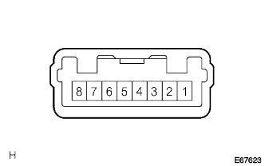

Smart Door Tsukushi System Smart Door Unone lock |
| Step 1 | Check if the door will unlock due to manual operation |
|
| ||||
| OK | |
| Step 2 | Door electrical key oscillator inspection |
|  |
SEL output voltage inspection
Use SST (Toyota Electrical Tester) to check the voltage of the SEL terminal of the door electrical oxylator key.
| Terminal number | item | Measurement conditions | standard |
|---|---|---|---|
| 2 (SEL) ← → 8 (GND) | Voltage | Elephant recall key transmitter (smart portable machine) is 5m or more from the driver's outside handle → approach the driver's outside handle | 10-14V → 0V |
|
| ||||
| OK | |
| Step 3 | Door electrical key oscillator inspection |
SENS input voltage inspection
Use SST (Toyota Electrical Tester) to check the SENS terminal voltage of the door electrical oxylator key.
| Terminal number | item | Measurement conditions | standard |
|---|---|---|---|
| 3 (SENS) ← → 8 (GND) | Voltage | Do not touch the front -out side handle asser rh → touch | 4.5V → 2V or less |
|
| ||||
| OK | ||
| ||
| Step 4 | Wire harness inspection (SEL) |
Smart Key Compiyuta ASSY ← → Door Electrical Oxylator Key Inspection Inspection
Separate the connector of the smart key compiyor ASSY and the door electrical oxylator key.
Use SST (Toyota Electrical Tester) to inspect the conduction of wire harnesses between the smart key computa ASSY 26 (SEL1) terminals ← → door electrical oxyllator key 2 (SEL) terminals.
|
| ||||
| OK | ||
| ||
| Step 5 | Wire harness inspection (SENS) |
Smart Key Compiyuta ASSY ← → Door Electrical Oxylator Key Inspection Inspection
Separate the connector of the smart key compiyor ASSY and the door electrical oxylator key.
Use SST (Toyota Electrical Tester) to inspect the wiring harness of the wire harness between the smart key computa ASSY 24 (SEN1) terminal ← → door electrical oxyllator key 3 (SENS) terminals.
|
| ||||
| OK | |
| Step 6 | Electric key wire harness inspection |
 |
Connector A ← → Connector B interchange inspection
Cut the electrical key wire harness connector A and connector B.
Use SST (Toyota Electrical Tester) to check the conductor between the electrical key wire harness connector A ← → connector B.
| Measuring terminal (Connector A ← → Connector B) | standard |
|---|---|
| 5 (ANT1) ← → 5 (ANT1) | There is an conductor |
| 4 (Ant2) ← → 2 (Ant2) | There is an conductor |
| 3 (SGT) ← → 6 (SGT) | There is an conductor |
|
| ||||
| OK | |
| Step 7 | Wire harness inspection |
Door electrical oxylator key ← → Electric Charcal Key Wire Harness Inspection Inspection
Separate the connector A of the door electrical oxylator key and electrical key wire harness.
Use SST (Toyota Electrical Tester) to check the conductor between each terminal A connector of the door electrical oxylator key ← → electric key wire harness.
| Measuring terminal (Oxyelator key ← → connector a) | standard |
|---|---|
| 6 (Ant1) ← → 5 (ANT1) | There is an conductor |
| 7 (ANT2) ← → 4 (ANT2) | There is an conductor |
| 5 (SGT) ← → 3 (SGT) | There is an conductor |
|
| ||||
| OK | |
| Step 8 | Door electrical key oscillator replacement |
Unlock operation inspection is performed by replacing it with a new door electrical oxyillator key.
|
| ||||
| OK | ||
| ||